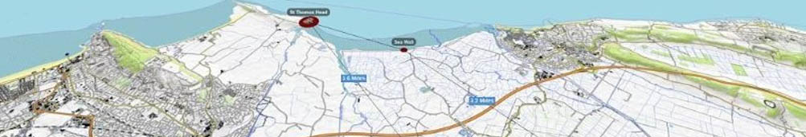

As part of a 10 week internship during the summer of 2018 I developed a WebGL application for a project known as ARTSTATION which works with Keep Wales Tidy to promote historical wells around Wales. The application was created as a tech demo to show to the Heritage Lottery project in order to secure the funding for the next section of their project. The demo was presented in October 2018, after which the team recieved full funding with highly positive comments about the demo and the potential for future implementation.
I was the sole programmer on the project and was also responsible for setting up and maintaining the network back-end during the development.
The project taught me a lot about working with clients as although I've done a lot of client work before this was by far the most hands-on. Direction was completely driven by the client through weekly meetings and daily email progress reports. In our weekly meetings we would review progress and they would outline what they wanted to be added next. As the client was from an artistic background, this also was a good teaching of managing expectations with technical limitations, especially in a cross-platform WebGL app!
Using THREE.js and an open source library named Potree, I developed an interactive map-based system which allowed users to explore regions of Wales and enter locations of interest to view drone mapped pointcloud data of the well sites and learn more about the history of the location.
Videos recorded by the drone were also placed in these pointcloud environments by parsing the drone's GPS data, allowing for immersive video experiences that mapped to the correct pitch, yaw and position as when they were captured. I created a camera system that tracked these videos through the environment allowing for a connection between the pre-recorded "story" content and the realtime rendered pointcloud data.
A host of the demo can be viewed below - be aware as this was a demo, the art and design is mostly placeholder and was not intended for public use. Other features may also be incomplete or not function as expected. Do not expect fast loading times!